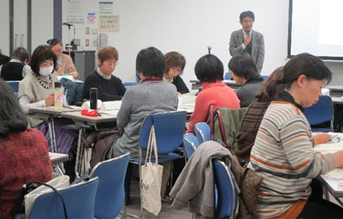
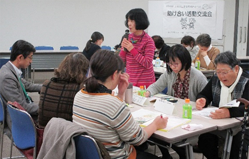

2019年度助け合い活動交流会報告
共同の学習会の要望や地域で連携をとの声が出されました
1月17日（金）10時30分より、浦和コミュニティセンター第15集会室にて、地域で助け合い活動に関わる組合員・職員3生協31人が参加し、助け合い活動交流会が開催されました。助け合い活動交流会は、互いの活動を交流し、生協の枠を越えて地域の中でつながりあいながら、助け合い活動や地域の見守り活動を充実させていくきっかけづくりの場と位置付けているものです。
1．報告の内容

- (1) はじめに、埼玉県生協連専務理事の吉川より、2000年に策定された埼玉県生協連の福祉政策などに触れながら、生協の助け合い活動の意義や地域の見守り活動について、説明がありました。
- (2) 次に、助け合い活動のしくみと実際の活動事例について、コープみらい、パルシステム埼玉、医療生協さいたまからスライドとパンフレットなどを使って、それぞれ説明がありました。自治体との関係づくりのためにどのような働きかけをしているか、組合員外でも援助を受け付けることにした経緯についてなど、質疑応答がありました。
- (3) 昼食をはさみ、6つのグループごとに活動交流をし、最後に各グループから交流内容について発表しました。
2．振り返りシートから

参加者の感想
- 高齢者の増加で援助依頼が増える中、担い手不足の中、持続可能な活動のためにはどうしたらいいか。
- 女性が中心で男性の担い手がほとんどいない。男性に参加してもらうにはどうしたらいいか考えたい。
- さまざまなニーズに、まず応えるという姿勢を感じました。
- 悩みや考え方が一緒であることがわかってよかった。
一緒にとりくめると思ったこと
- 援助活動の参考になる介護に関する学習会や講習会
- 担い手のいない地域では、他生協のたすけあいの会を紹介する
- 援助者同士のつながりで助け合いが広がるのでは
- 地域ごとに話し合えたらいい
3．次回に向けて
担い手のいない地域での他生協の紹介について、また、共同の学習会開催について多数の声があることから、実施に向けた検討をすすめていきます。